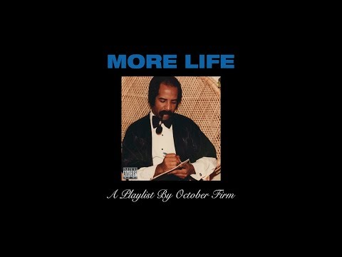

Ο Ώμπρεϊ Ντρέικ Γκρέιαμ (γεννημένος στις 24 Οκτωβρίου 1986), γνωστός μονοσήμαντα ως Drake, είναι Καναδός ράπερ, τραγουδιστής και ηθοποιός. Φιγούρα με επιρροή στη λαϊκή μουσική, του έχει αποδοθεί η εκλαΐκευση των ευαισθησιών της R&B στους καλλιτέχνες χιπ χοπ.
ΜΕΓΑΛΥΤΕΡΟΙ ΔΙΣΚΟΙ ΤΟΥ DRAKE

Views

More life

Scorpion